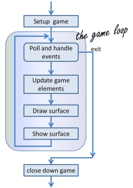
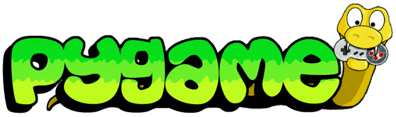
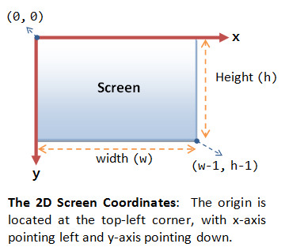
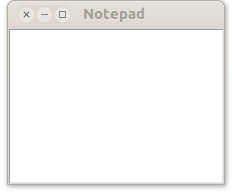
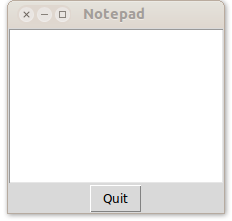
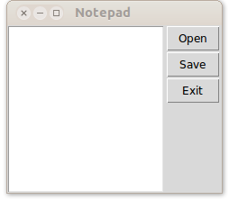
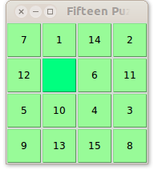
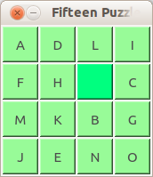
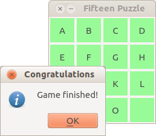

- Libreria per giochi 2D
- Grafica e suoni
- Su SDL - Simple DirectMedia Layer
- Semplice e veloce
- Open-source
- Multi-piattaforma

Michele Tomaiuolo
Ingegneria dell'Informazione, UniPR


import pygame
pygame.init() # Prepare pygame
screen = pygame.display.set_mode((640, 480)) # (w, h)
screen.fill((255, 255, 255)) # BG (Red, Green Blue)
# Yellow rectangle, left=50, top=75, w=90, h=50
pygame.draw.rect(screen, (255, 255, 0), (50, 75, 90, 50))
# Blue circle, center=(300, 50), radius=20
pygame.draw.circle(screen, (0, 0, 255), (300, 50), 20)
pygame.display.flip() # Update the screen
while pygame.event.wait().type != pygame.QUIT:
pass
pygame.quit()
import pygame
pygame.init() # Prepare pygame
screen = pygame.display.set_mode((320, 240))
clock = pygame.time.Clock() # To set game speed
image = pygame.image.load('ball.png')
x = 50; playing = True
while playing:
for e in pygame.event.get(): # Handle events: mouse, keyb etc.
if e.type == pygame.QUIT: playing = False
screen.fill((255, 255, 255)) # Draw background
screen.blit(image, (x, 50)) # Draw foreground
x = (x + 5) % 320 # Update ball's position
pygame.display.flip() # Surface ready, show it!
clock.tick(30) # Wait 1/30 seconds
pygame.quit() # Close the window
import pygame
pygame.init() # Prepare pygame
screen = pygame.display.set_mode((320, 240))
clock = pygame.time.Clock() # To set game speed
image = pygame.image.load('ball.png')
x = 50; playing = True
while playing:
for e in pygame.event.get(): # Handle events: mouse, keyb etc.
if e.type == pygame.QUIT: playing = False
screen.fill((255, 255, 255)) # Draw background
screen.blit(image, (x, 50)) # Draw foreground
x = (x + 5) % 320 # Update ball's position
pygame.display.flip() # Surface ready, show it!
clock.tick(30) # Wait 1/30 seconds
pygame.quit() # Close the window

arena = Arena(320, 240)
Ball(arena, 40, 80); Ball(arena, 80, 40);
Ghost(arena, 120, 80) # ...
# a map from an actor type to an image
images = {Ball: pygame.image.load('ball.png'),
Ghost: pygame.image.load('ghost.png')}
screen = pygame.display.set_mode(arena.size())
playing = True
while playing:
# Handle events here!
arena.move_all() # Game logic
screen.fill((255, 255, 255)) # Background
for a in arena.actors():
x, y, w, h = a.position()
img = images[type(a)]
screen.blit(img, (x, y)) # Foreground [...]
from pygame.locals import (KEYDOWN, KEYUP, K_RIGHT, K_d,
MOUSEBUTTONDOWN, MOUSEBUTTONUP, MOUSEMOTION)
# ...
for e in pygame.event.get():
# print(e)
if e.type == KEYDOWN and e.key in (K_RIGHT, K_d):
print('Right arrow (or D) pressed')
elif e.type == KEYUP and e.key in (K_RIGHT, K_d):
print('Right arrow (or D) released')
elif e.type == MOUSEBUTTONDOWN and e.button == 1:
print('Left mouse button pressed')
elif e.type == MOUSEBUTTONUP and e.button == 1:
print('Left mouse button released')
elif e.type == MOUSEMOTION:
print 'Mouse at (%d, %d)' % e.pos
# Red (anti-aliased) text, centered, rotated 30° ccw
font = pygame.font.SysFont('arial', 48)
surface = font.render('Game over!', True, (255, 0, 0))
surface = pygame.transform.rotate(surface, 30)
x = (screen.get_width() - surface.get_width()) // 2
y = (screen.get_height() - surface.get_height()) // 2
screen.blit(surface, (x, y)) # surface ~ image
# Some sound
pick_up_sound = pygame.mixer.Sound('pickup.wav')
pick_up_sound.play() # play(-1) to loop, then stop()
tkinter (Tk interface)
from tkinter import Tk, Text
window = Tk()
text_edit = Text(window)
text_edit.pack(expand=1, fill='both')
window.title('Notepad')
# event loop: mouse, keyb etc.
window.mainloop()

from tkinter import Tk, Text, Button
window = Tk()
text_edit = Text(window)
text_edit.pack()
# When button is clicked, window's
# destroy method is executed
quit_button = Button(window, text='Quit',
command=window.destroy)
# widgets in vertical layout
quit_button.pack()
window.title('Notepad')
window.mainloop()
from tkinter import Tk, Text, Button, messagebox
class Notepad(Tk):
def __init__(self):
Tk.__init__(self)
# basic widgets as private fields
self._text = Text(self)
self._text.pack()
self._quit = Button(self, text='Quit', command=self.quit)
self._quit.pack()
def quit(self):
if messagebox.askokcancel('Quit', 'Are you sure?'):
self.destroy()
win = Notepad()
win.mainloop()
from tkinter import (Tk, Text, Menu,
messagebox, filedialog, END)
class Notepad(Tk):
def __init__(self):
Tk.__init__(self)
text_edit = Text(self)
text_edit.pack()
menu_bar = Menu(self)
self['menu'] = menu_bar
menu_file = Menu(menu_bar, tearoff=0)
menu_bar.add_cascade(label='File', menu=menu_file)
menu_file.add_command(label='Open...', command=self.open)
menu_file.add_command(label='Save...', command=self.save)
menu_file.add_command(label='Quit', command=self.quit)
# ...
class Notepad(Tk):
# ...
def open(self):
fn = filedialog.askopenfilename()
if fn:
with open(fn, mode='r') as f:
contents = f.read()
self._text_edit.delete(1.0, END)
self._text_edit.insert(END, contents)
def save(self):
fn = filedialog.asksaveasfilename()
if fn:
with open(fn, mode='w') as f:
contents = self._text_edit.get(1.0, END)
f.write(contents)

Frame (riquadri), per realizzare gerarchie di contenimento tra widget# vertical layout, default side='top'
widget.pack()
# horizontal layout
widget.pack(side='left')
# grid layout
widget.grid(column=x, row=y)
from tkinter import Tk, Text, Frame, Button
class Notepad(Tk):
def __init__(self):
Tk.__init__(self)
text_edit = Text(self)
text_edit.pack(side='left')
v_box = Frame(self)
v_box.pack(side='left') # fill='y'
open_btn = Button(v_box, text='Open')
open_btn.pack() # side='top'
save_btn = Button(v_box, text='Save')
save_btn.pack()
quit_btn = Button(v_box, text='Quit')
quit_btn.pack()


class BoardGameGui(Tk):
def __init__(self, g: BoardGame):
Tk.__init__(self)
self._game = g
for y in range(g.rows()):
for x in range(g.cols()):
b = Button(self)
b['command'] = (lambda x=x, y=y:
(self._game.play_at(x, y),
self.update_buttons()))
b.grid(column=x, row=y)
self.update_buttons()
# ...

class BoardGameGui(Tk):
# ...
def update_buttons(self):
for y in range(self._game.rows()):
for x in range(self._game.cols()):
b = self.grid_slaves(row=y, column=x)[0]
b['text'] = self._game.get_val(x, y)
if self._game.finished():
messagebox.showinfo('Game finished', self._game.message())
self.destroy()
Michele Tomaiuolo
Palazzina 1, int. 5708
Ingegneria dell'Informazione, UniPR
sowide.unipr.it/tomamic